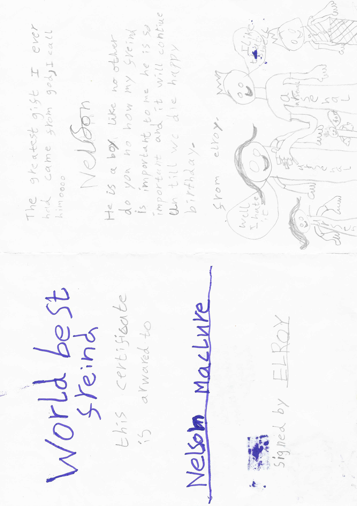
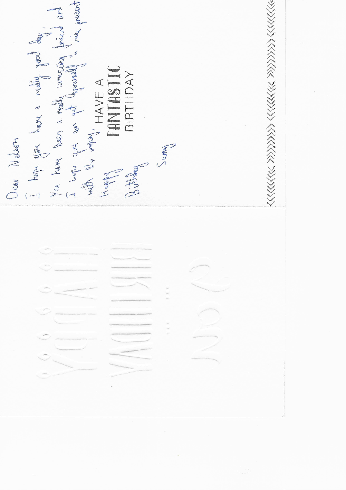
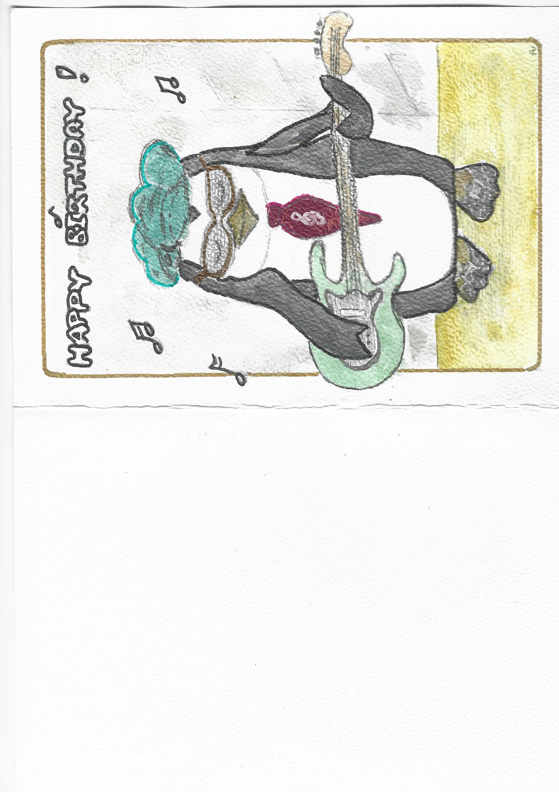
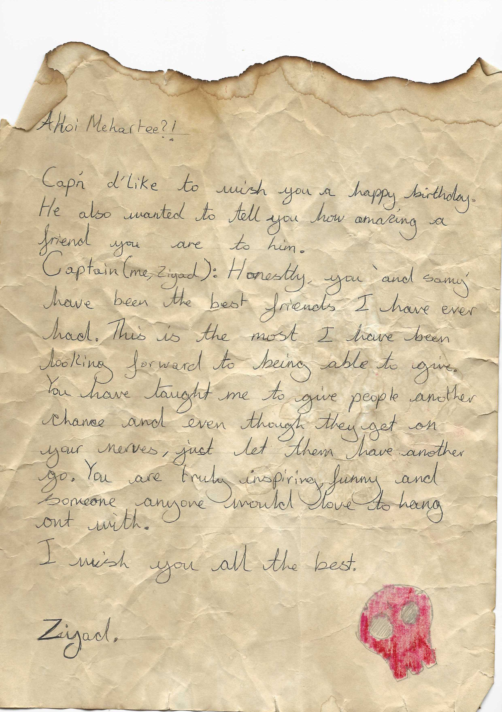
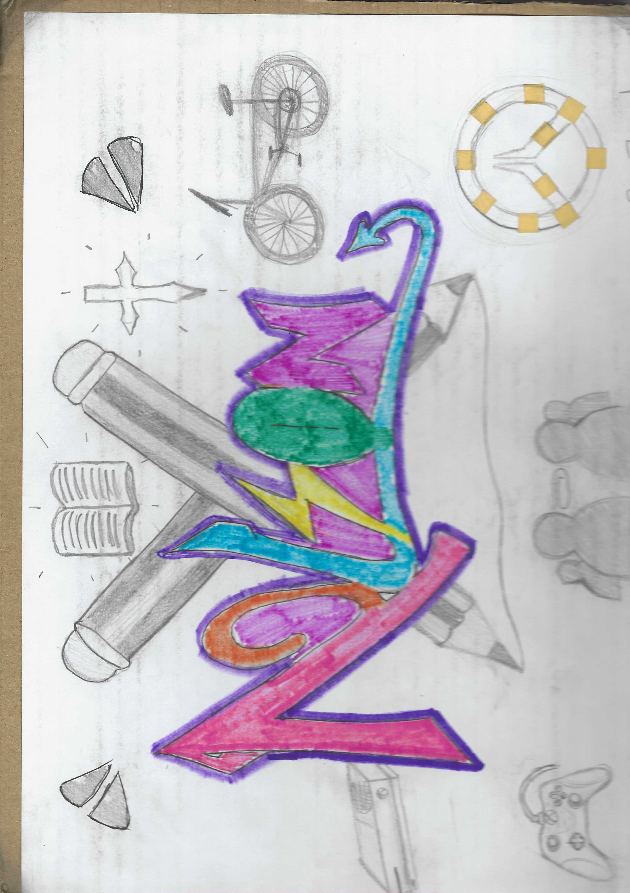
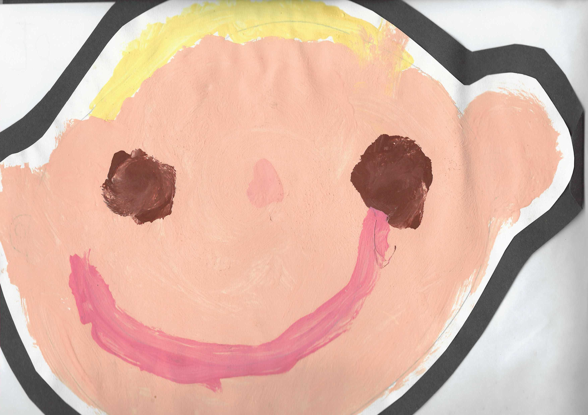
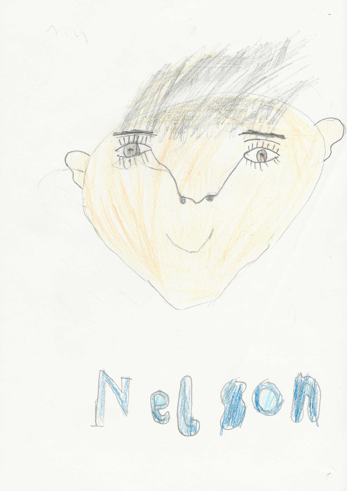

Today I was asked to organise a box full of bits and bobs to prepare us for moving house. The box (about the size of a small bathtub) was overflowing with memorable items from my past - it was now my job to cut down what was there so that the neat could neatly fit on top. Over half an hour, I was able to separate everything into a few piles. The process prompted some unique thoughts:
I wasn't particularly effected by revisiting my history via these random objects but birthday cards left the most impact.

On my 7th birthday Elroy must have made me this wonderful card. I enjoy how much effort he put into it. Recieving a card with so much heart put into it is more valuable than a gift. The 'worlds best friend' award is very creative, and he was even kind enough to sign it. Even better are his drawings, which depict what looks to be my family wearing Arsenal T-shirts. My littlest sister says 'fart' followed by my dad: 'i like that smell' and 'well I hate it' from my mum. Almost the only thing I can remember of him is that he supported Manchester City. On our way home from school one day I offered him 5 house points if he changed and supported Arsenal. He agreed and I wrote down the 5 house points for him in my little yellow notebook. Catastrophically though, my heart was broken when I overheard him cheering for Manchester City again a few days later. First traumatic event for me. Nevertheless, after moving away from north London not long after this birthday party, we lost contact and I have never seen him since. I hope he continues to bless people with his enthusiasm. I hope he knows that our friendship is sealed 'until we die' (as he has put it). And I hope he knows he still owes me 5 house points.


These cards are from the same person but separated by years. I'm not exactly sure when the first card is written. I've known Samy for about 7 years and I hope to know him for much longer. The second card was actually a drawing by Samy and his mum (who's initials are in the bottom right hand corner). With both of these cards, I feel honored recieving them. I feel cared for, I feel validated since they demonstrate that Samy is prepared to show me the same kindness, care and deliberation he so excellently puts into everything he does. Thank you Samy.


I'd like to honor these creations by someone who I've lost contact with. I remember the day Ziyad brought me this pirate themed birthday letter. I remember him describing how he dipped the paper in tea leaves and singed the edges. Even the significance of the symbols on the picture on the right hand side shows his care and kindness and talent. They're totally relevant and specific as well as being expertly drawn. Ziyad's birthday was only this month. I'll send him a message.
This morning I spent 2 hours browzing instagram reels. This happens fairly regularly and strictky between the hours of midnight and 2 am. As soon as it hits 2 am I've absorbed enough shit for the day and fall asleep. I don't feel particularly good about it all the time but the way I look at it is an opportunity to practice self love. I am infact loved and treasured regardless of my screentime. Anyways, I feel this ties into a bigger collection of thoughts surrounding self love and forgiveness.
During the same organsiation session as on the 28th I came across a couple self portraits I had done as part of school projects. Although my artistic strength may have improved over the years, these photos capture something which I probably have lost (or lost touch with) over the years. Here's the first one:

I don't know when this was drawn but it must have been long ago. I'd say I was probably younger than 3? I find it interesting how I've tried to capture a likeness of myself. Strangely, it looks a lot like my cousin Otto (who wouldn't have been born for many years). Since at the time I wasn't very dextrous, I've made artistic choices to try and circumnavigate this issue. Rather than sculpting an accurate portrait, I've given myself blond hair (which was true at the time), brown eyes (still true), white skin, a nose and a big smile. At least inwardly, I wasn't concerned with the detail, this was convincing enough. On the one hand, this could mean that I didn't feel the need to impress, or to be understood. I'd argue that the main part of the motivation behind the simplicity was probably my eagerness to do something else. Nevertheless, there is an innocence in that.

I also don't know wen I done then self portrait but it must have come later. You can see my development as an artist with the increased fidelity in my depiction of my hair, my nose, my eyes and even my ears. At this point my hair has changed colour - going from blonde to black? (I've never had black hair). I've demonstrated my increased writing skills by adorning the self portrait with a bubble-font title of my own name. Hey, what is actually interesting is how in each portrait the left ear (my right ear) droops lower than the other. This could be due to me being right handed and having to reach over the paper to draw the other ear. If I was drawing on a table, this action may have impaired my ability to expertly pencil in a sketch. At least, this shows that a level of perfectionism hadn't set in yet - I wasn't firing on all cylinders (not consciious). Sorry, but this is actually so fucking cool.
In my perspective, both of these portaits feel finished. I have no critisisms. Deadass, if I saw either of these in the Tate Modern I'd be genuinely intrigued. I'm not sure if I can say the same with any portrait I've done since. This is evident since me (or my parents) haven't found it necessary to keep any. After a certain point, the portraits stop capturing an oblivious goblin toddler version of Nelson and start becoming more detailed, maybe even better drawn. But at this point the focus of my drawing shifts from something 'pure' to something like 'trying to impress' or 'not making mistakes'. Maybe this level of thinking can be traced back to the desire to be accepted. At the time of these 2 drawings i had so little self awareness, I could create without any boundaries. Currently, I am becoming more aware of my behaviours which are impacted by my desire to feel included, liked, respected appreciated. Additionally, I know that I find it very hard to create. Making music hasn't been a major part of my life for years now. I feel some barrier when it comes to expressing honestly. These portraits provoke a bittersweet feeling. Despite having grown a lot since their conception, I have lost something since then as well.
This entry is getting quite long and I need to help pack since we are moving house today. I've noticed that more recently, I feel more creatively energised. I think this is a direct result of taking time to look inwardly and actively trying to focus on feeling loved and treasured regardless. It certainly feels stronger some days better than others but 99% of the process is perseverance. Essentially, each day I aim to be a little more like goblin toddler version of Nelson, who knew more readily that he was loved and treasured regardless. It's hard to cultivate this sense of knowing by yourself, and it sure helps to have people demonstrate it to you. These people are often family, friends and, for some, God but for now take my word for it: you're loved treasured more than you know and regardless of anything.